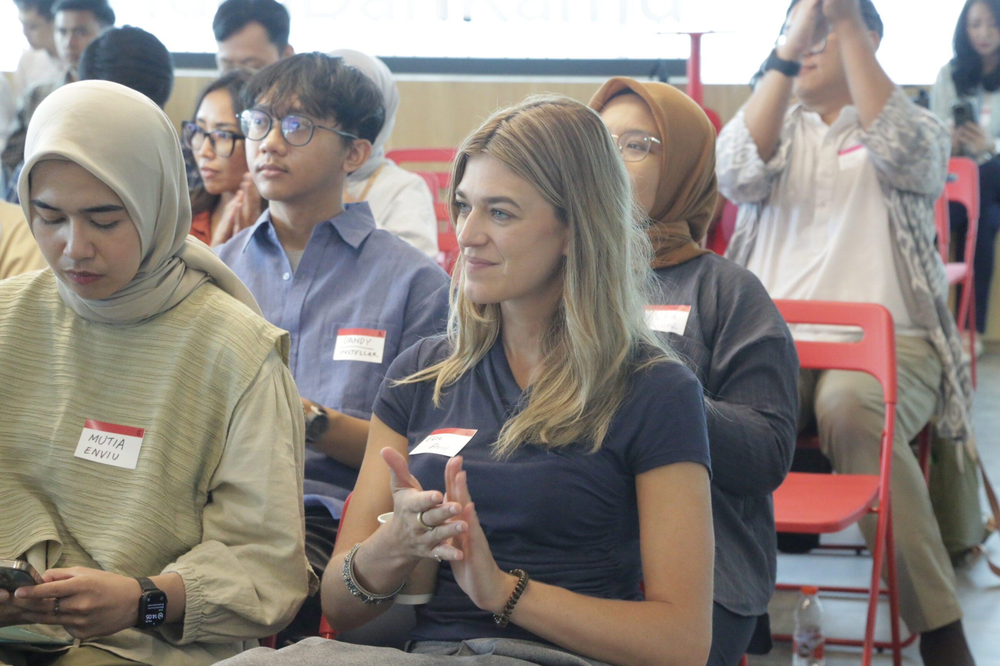

Align your CSR and ESG commitments with business opportunity. Partner with ANDE to reach small and growing businesses, strengthen your supply chain, access market intelligence, and create measurable business and social impact.

Align CSR/ESG with business goals through partnerships that create business value while advancing your sustainability and social impact commitments.
Access high-potential business partners from ANDE's network of 250+ organizations across 150+ countries, identifying suppliers, distributors, and market opportunities.
Strengthen your supply chain by building capacity of suppliers and distributors, creating more resilient and sustainable business relationships.
Gain market intelligence on emerging markets and SGBs to inform market entry strategies and business expansion plans.
Customize your engagement with ANDE through multiple partnership models:
- Corporate member access to network and resources
- Co-developed programs targeting specific business objectives
- Joint initiatives with partner organizations
- CSR/ESG program structuring and measurement
Access opportunities and insights to support business growth:
- SGB market research and opportunity mapping
- Supplier and distributor identification and vetting
- Market entry strategies for emerging markets
- Ecosystem partner and distribution network access
Strengthen your supply chain and create business relationships:
- Supplier capability assessment and training
- Capacity building for suppliers and distributors
- Quality standards and compliance support
- Long-term partnership development
Support job creation and workforce readiness through:
- Technical and business skills training programs
- Vocational training aligned with business needs
- Youth employment and apprenticeship programs
- Training delivery and impact measurement
Corporate partners in ANDE's network are creating measurable business and social impact:


Partner with ANDE to achieve your business objectives while creating measurable social impact. Connect with 250+ organizations across emerging markets.
ANDE provides market intelligence, ecosystem mapping, partner vetting, and direct connections to potential business partners and distributors. We help you understand market dynamics and identify entry strategies tailored to your business.
Yes. ANDE facilitates supplier identification, vetting, and capacity building. We work with you to identify potential suppliers, support their development, and create sustainable business relationships aligned with quality and compliance standards.
ANDE provides standardized impact measurement frameworks and tools to track ESG outcomes including job creation, gender equity, climate impact, and economic development. We help you demonstrate business and social value created through partnerships.
Partnership models vary based on your business objectives. Options include supply chain development, skills training, market entry support, CSR program co-design, and long-term strategic partnerships aligned with your business strategy.
ANDE offers flexible membership options tailored to corporate partners of all sizes. Pricing depends on your organization's size, geographic focus, and program scope. Contact our team for a customized proposal.
Absolutely. Many corporate partners execute multiple programs simultaneously (supply chain development, skills training, market entry) through ANDE's network of partners. We can help coordinate across initiatives.
ANDE has established relationships with 250+ member organizations across 150+ countries. We leverage this network to identify and facilitate connections with vetted local partners who can help execute your corporate programs.
Our corporate partnerships team is ready to explore how ANDE can support your business objectives and ESG commitments. Let's start a conversation.